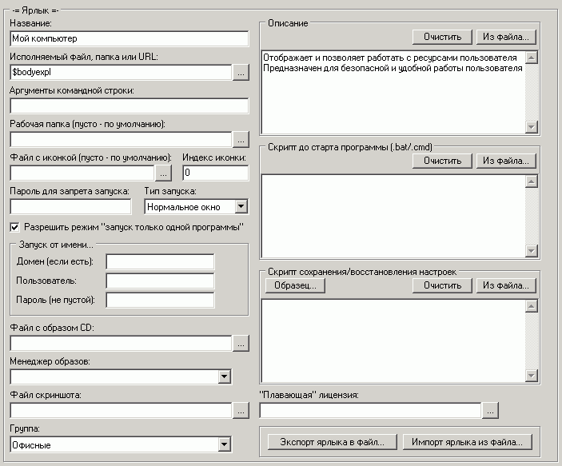

Наиболее важные опции:
Исполняемый файл/папка/URL
Введите относительный (с переменными окружения %%) или абсолютный путь к исполняемому файлу. Если использовать $name, то предполагается, что name - это .exe-файл в папке клиентского шелла.
Рекомендуется использовать относительные пути с использованием переменных окружения %переменная%
Однако можно и абсолютные вида C:\folder\...\file.exe, при этом "C:" в данном примере предполагает диск на клиентской машине, а не серверной!
Использование сетевых путей вида \\server\data... может замедлить работу клиентской машины.
Аргументы командной строки
Только для exe/bat/cmd - файлов
Рабочая папка
Только для exe/bat/cmd. Если не указана, то берется из пути к исполняемому файлу.
Рекомендуется использовать относительные пути с использованием переменных окружения %переменная%
Файл с иконкой/индекс иконки
Устанавливайте только если желаете изменить иконку ярлыка.
В данной версии индекс игнорируется!
Также можно установить картинку вместо иконки. Поддерживаются типы файлов
.bmp,
.jpg,
.gif,
.png. Рекомендуется устанавливать картинки небольших размеров, чтобы скорость загрузки закладки была минимальной и не было большого потребления памяти.
Пароль для запрета запуска
Можно установить запуск ярлыка по паролю
Тип запуска
Выберите как запускать программу.
"Скрытое окно" рекомендуется использовать только для bat/cmd-файлов
Разрешить режим "запуск только одной программы"
Если в настройках клиентского шелла включена опция "Разрешить запуск только одной программы", то включая/отключая данную опцию можно включить/отключить этот режим персонально для каждого ярлыка.
Например, если нужно запретить запускать более одной игры одновременно, но параллельно с любой игрой чтобы можно было запускать Winamp
Запуск от имени
Можно запускать программу от имени любого пользователя Windows (аналог "Run As...")
Файл с образом CD
Выберите файл с образом CD, который будет автоматически вставляться при каждом старте программы
Менеджер образов
Используется совместо с предыдущей опцией.
Если не указан, то будет определяться автоматически.
См. также настройки клиентского шелла "Запуск ярлыков"->"Эмуляторы CD-дисков".
Файл скриншота
Можно установить скриншот на ярлык
Рекомендуется использовать относительные пути с использованием переменных окружения %переменная%
Группа
Можно разбить ярлыки по группам в пределах одной закладки.
Для этого просто укажите название группы. Если название не указано, то ярлык не будет принадлежать ни одной группе.
Сортировка ярлыков в пределах группы осуществляется в порядке их следования, а сортировка групп в пределах закладки - в порядке появления ярлыка принадлежащего данной группе.
Т.е. если первый ярлык в закладке принадлежит к группе "Новые", то и сама группа "Новые" будет отображена первой.
Внимание! Разбитие по группам не будет отображаться если выбрана опция показа ярлыков слева-направо (стиль Windows), а будет только при показе сверху-вниз (стиль Runpad)!
Описание
Можно установить текстовое описание программы. Оно может быть введено вручную или загружаться из внешнего файла.
Скрипт до старта программы
Иногда бывает полезно запустить bat-файл перед стартом программы. Можно вписать текст этого файла-скрипта вручную или установить ссылку на внешний файл.
Скрипт сохранения/восстановления настроек
Установка соотв. скрипта вписанного вручную или из внешнего файла.
Более подробно см.
здесь
"Плавающая" лицензия
Более подробно о менеджере "плавающих" лицензий см.
здесь